Lens is the design language of Omen Flow. Three zoom levels replace pages, space follows causality, the interface takes the shape of the work, and the agent lives in one composer wired to its real terminal.
The whole system as one causal flow: Intent → Parts → Design → Evidence.
One object on the stage between what it depends on and what it affects.
One proposal with its evidence, its consequences, and your decision.
Every object in causal columns. Only what waits on a human floats in “Needs you”.
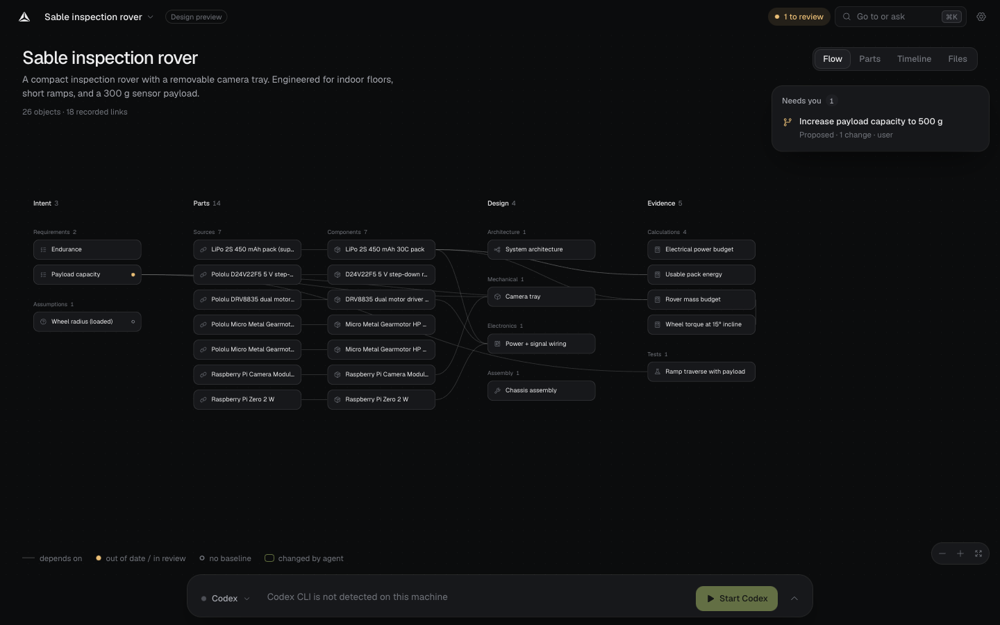
Hover any object and its full upstream and downstream chain lights; the rest steps back.
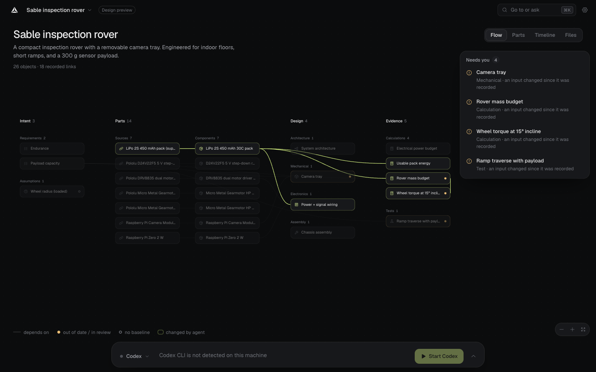
After a baseline changes, the stale path through the project is marked in place.
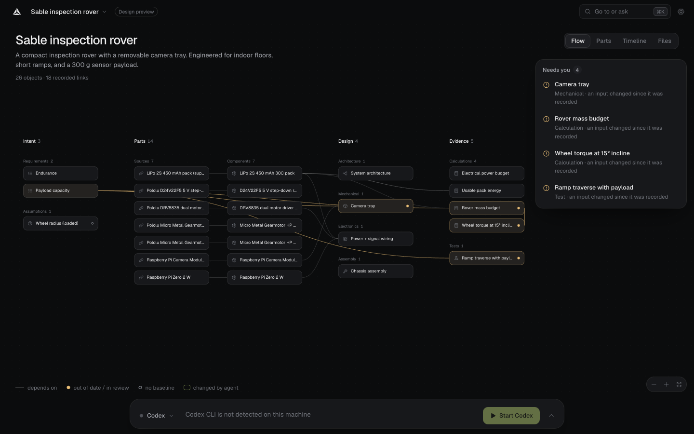
Inputs on the left rail, consequences and revisions on the right. The stage becomes a 3D workspace; the composer carries the object as context.
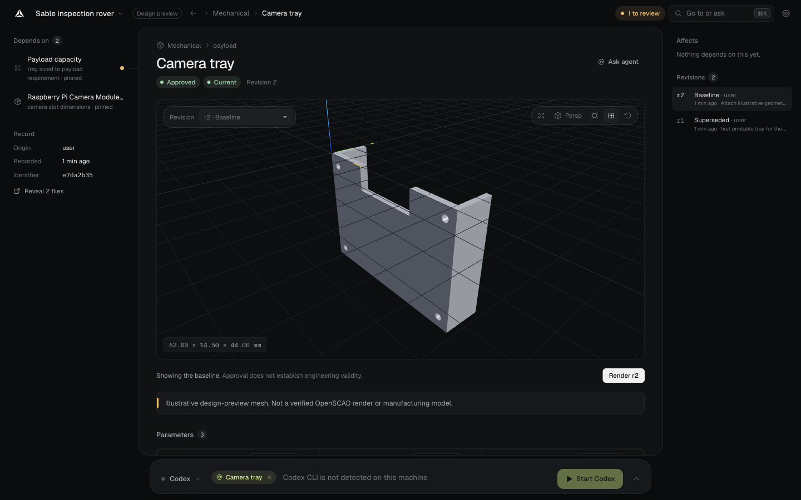
A statement you can edit in place, with its target kept as one quantity.
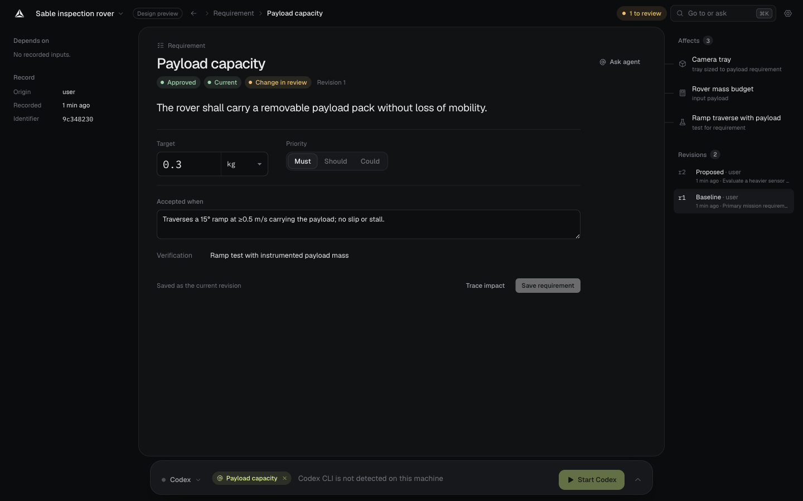
Result, expression, and every input with its value and source — the evidence as an equation.
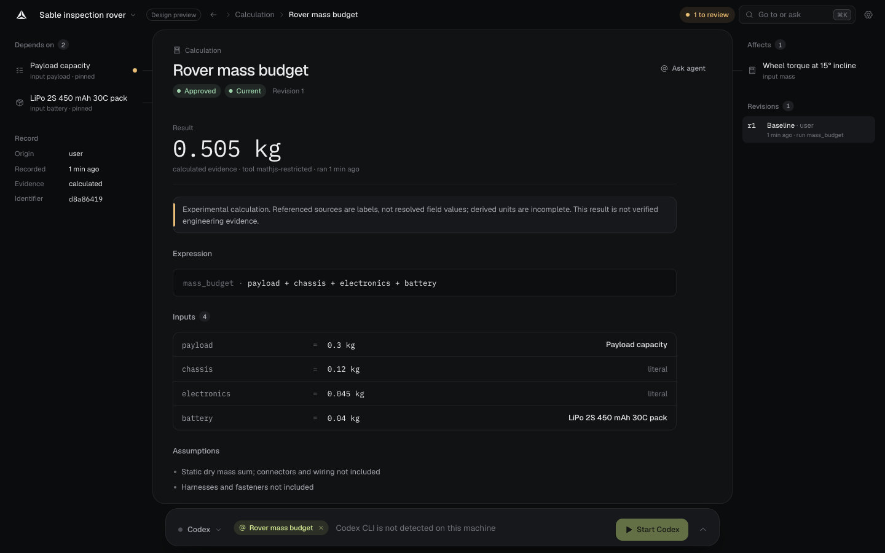
Queue, proposal, impact. Quantities change atomically. The decision stays pinned.
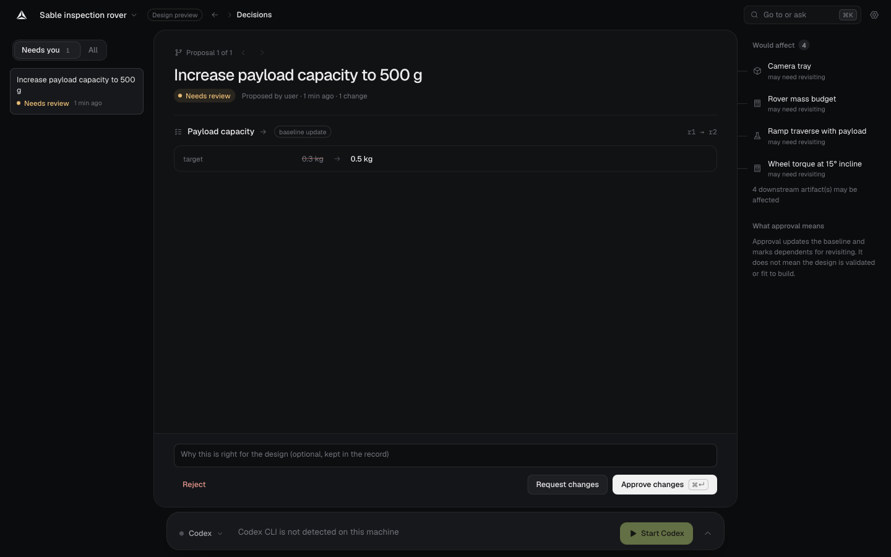
The real PTY, docked wide under the stage. The composer types into it, nothing more.
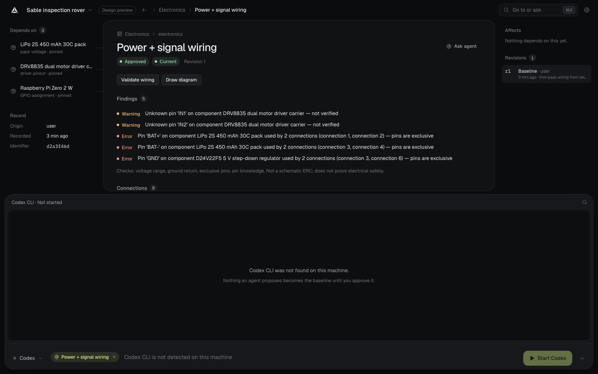
Parts and Timeline re-project the same record. Unknown values stay unknown.
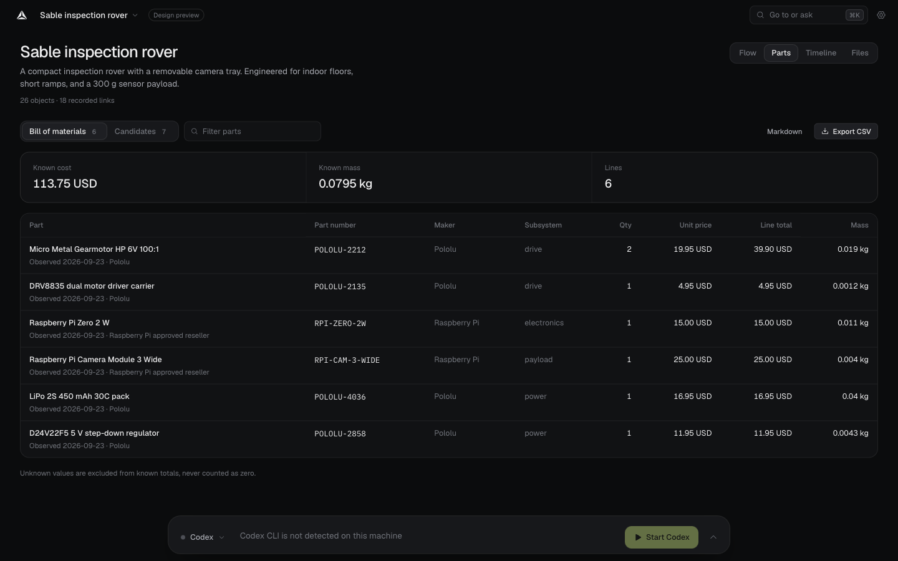
The light theme shares every role with Graphite.
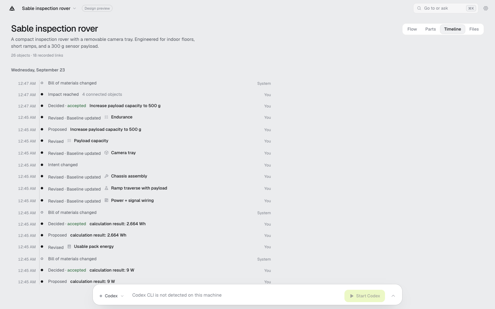
⌘K: recent objects, lenses, actions — and “Ask the agent” while a session runs.
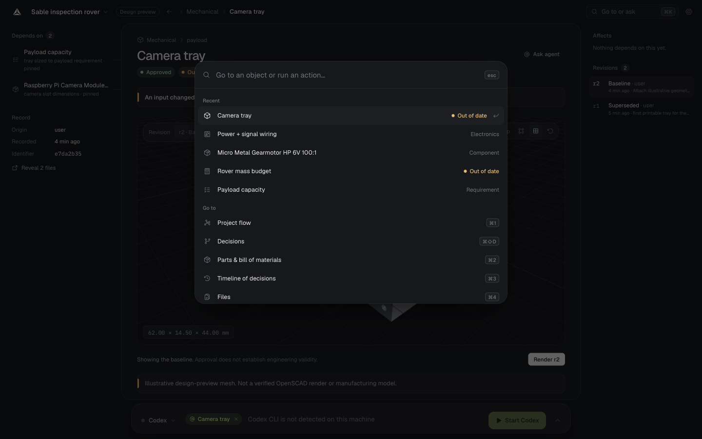
One question, then your recent work.
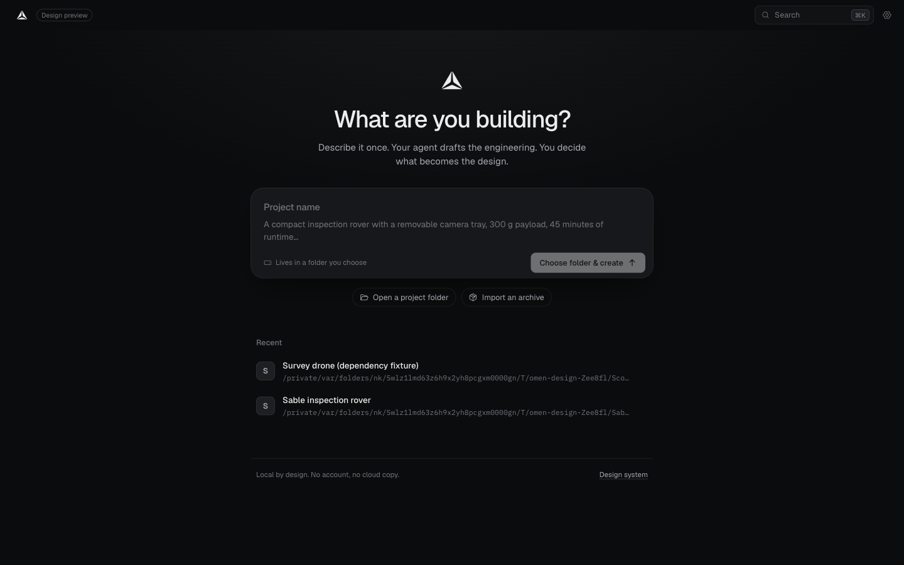